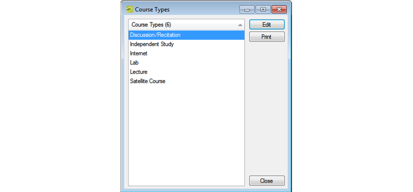
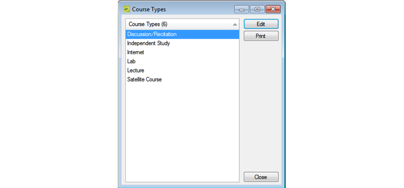

If the appropriate event type is not available, you can configure it. See Configure Event Types.
When you configure your course types, you have the option of assigning an event type at the course type level. If you do not select an event type at the course type level, then the event type that you selected at the academic unit level will be assigned to room bookings that are created for courses scheduled in EMS.
For information about event types at the academic unit level, see Configure Academic Units.

If the appropriate event type is not available, you can configure it. See Configure Event Types.